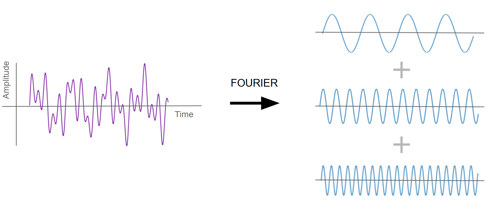
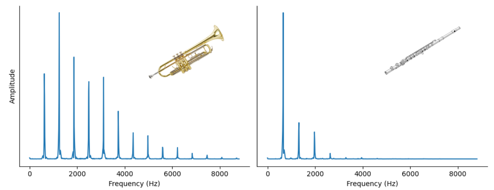
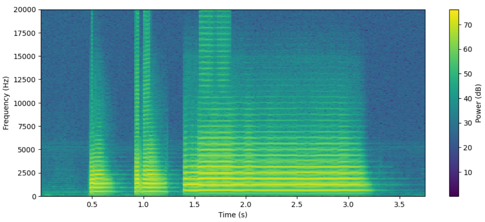
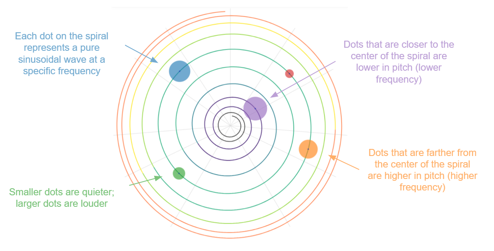
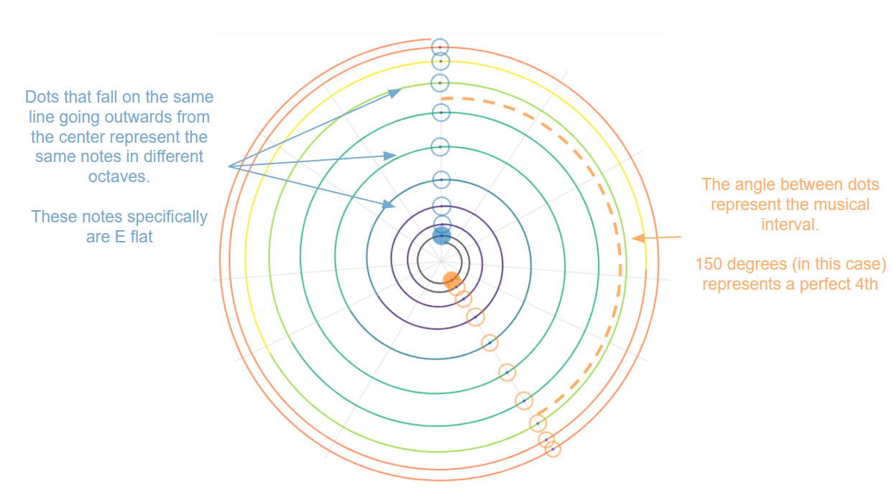
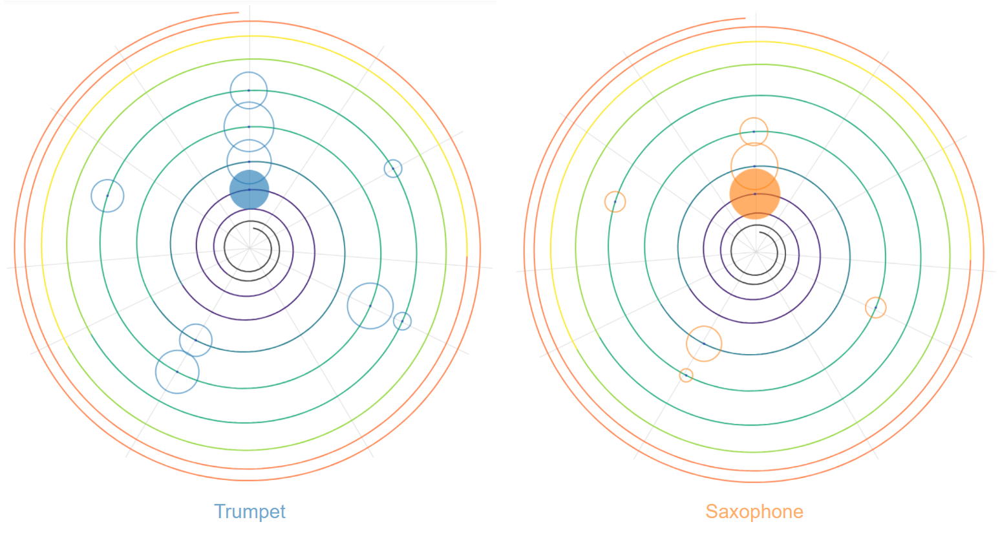

‹ Projects
Torusophone
Motivation and Background
One of my hobbies is creating music, and the Torosophone is a personal project that I have been working on to develop a tool to design new sounds for music. The motivation behind the Torosphone is to give users the ability to design new sounds by controlling the individual frequencies that combine together to create different sounds.
To understand how the Torosophone works, it is useful to review a little bit of sound theory. You may recall from physics class that all waveforms, like sound waves, can be decomposed into a set of frequencies and their associated intensities. This process, known as the Fourier transform, shows which frequencies are the strongest contributors of a particular waveform.

A waveform (in purple) can be decomposed into its individual frequencies (in blue) through the Fourier transform.
In music theory, when the Fourier transform is applied to the sound wave of an instrument, the resulting set of frequencies are called partials. The partial with the lowest frequency is known as the fundamental frequency, while the other frequencies are known as overtones or in some cases, harmonics. The distinction between the fundamental frequency and overtones is important, because in most cases, the fundamental frequency determines the pitch of the note1 (i.e. how low or high it sounds), while the overtones determine the timbre (the quality or colour of the sound). If you listen to different instruments, you may notice that some sound warm or mellow, while others, sharp - these differences are the result of the differing overtone profile for each sound.

The overtone profiles for a trumpet sound (left) compared with a flute (right).The distinct sound of a trumpet is created from a large contribution of higher overtones, resulting in a sharp sound. In contrast, a flute has a steeper overtone profile, resulting in a more mellow sound.
The profiles of overtones (and partials) are incredibly important in determining the character of sounds, however, most methods of music creation do not give creators direct control over these profiles. For example, with physical instruments, overtones are an intrinsic part of the sound that is produced, arising from the physical geometry and material of the instrument. Digital tools give creators more flexibility, and a range of techniques (such as modulations and filters) can indirectly alter the profile of partials through mathematical functions. However, I wondered what a tool would look like if it allowed users to directly define these profiles. Profiles of partials can be incredibly complex, so how would the tool be designed to be intuitive for users? This page documents my exploration of this idea.
The Torus
While developing the interface for the Torusophone, my biggest priority was to find an intuitive way to represent the profiles of partials. My first idea was to use a spectrogram, which is a graph that visualizes the frequencies of a waveform across time. Frequency is plotted on the y-axis, and the intensity (or amplitude) of each frequency is often encoded through colour. A spectrogram would work well, because it is very easy to see the important frequencies in a sound - which would represent the partials.

A spectrogram of a trumpet call. Partials are visible as the bright yellow tracks.
However, there were a few characteristics of a spectrogram that make it a suboptimal choice for my project. The main issue is that a spectrogram does not convey the mathematical relationships between different frequencies very well. This is important, it turns out, because much of music is built on frequency ratios, and frequency ratios can tell us a lot about the consonant or dissonant characteristics of a sound. Furthermore, all music intervals in music theory is defined by a specific frequency ratio.
The following table shows the frequency ratios of music intervals using just intonation2.
| Minor 2nd | 15:16 |
| Major 2nd | 8:9 |
| Minor 3rd | 5:6 |
| Major 3rd | 4:5 |
| Perfect 4th | 3:4 |
| Tritone | 32:45 |
| Perfect 5th | 2:3 |
| Minor 6th | 5:8 |
| Major 6th | 3:5 |
| Minor 7th | 5:9 |
| Major 7th | 8:15 |
| Octave | 1:2 |
Unfortunately, since frequencies on a spectrogram are plotted on a single axis, it is not easy to precisely identify the ratio between two different frequencies.
My next idea came after I realized that the way humans perceive pitch is cyclical in nature. Specifically, the entire range of human hearing can be represented in around 10 musical octaves, with the same notes recurring in each octave. After this realization, I had the idea of visualizing partials on a circular feature, like a spiral, with each revolution of the spiral representing a single octave. To explore this idea further, I imagined dots being placed on a spiral, with each dot representing a partial at a specific frequency. Dots that are closer to the origin of the spiral have a lower frequency (lower pitch), with increasing frequency further away from the center.

Using a spiral allows a better representation of musical characteristics of partials, through a two defining characteristics:
- Each loop of the spiral corresponds to a musical octave, which means that circles that lie on the same line originating from the center of the spiral are the same musical note, but in different octaves
- The musical intervals between different tones are represented by the angle of circles on the spiral. For example, a perfect 5th is always 210 degrees apart.

By adding, removing, and adjusting the different dots on the spiral, the user can change the characteristic of the sound. In the Torusophone interface, a timeline feature is provided on the right side to allow users to control how the sound changes over time.
Here’s what the partials would look like on the Torusophone spiral for a trumpet and saxophone note.

But why is it called “Torusophone”?
The name is a portmanteau of “Torus” and “Saxophone”. When I first drew up sketches of the spiral, it seemed to me almost like I was looking at the top view of a donut (or a torus).
Technical Work
On the technical side, I created Torusophone as a web application using React, with most of the interface being manually rendered on a Javascript canvas element. As with all my personal projects, no generative AI was used to produce any code, except for simple boiler plate code.
Currently, my code is contained in a private github repository. However, if there is interest, I am more than happy to share the repository with others upon request.
Future Work
The Torusophone is a project that is currently in development, and there are still many features that I want to add. Some potential features will improve the user interface and user experience. For example: adding features to make it easy to make precise changes to the frequency and amplitude of individual partials, or allow the selection of multiple partials at once. A more ambitious feature that I am working on will hopefully allow users to upload audio samples. An algorithm will decompose this audio sample into a form which can be displayed on the Torusophone interface, allowing users to modify existing sounds.
1 - in some cases, the apparent pitch of the note might not actually be associated with any of the constituent frequencies, as is the case of the missing fundamental, an auditory illusion where the pitch of the note appears to be even lower than the fundamental frequency
2 - there are different types of tuning systems, such as just intonation, and equal temperament. Just intonation is seen often in choir music or string ensembles, however, for practical reasons, most instruments are tuned to the equal temperament system.